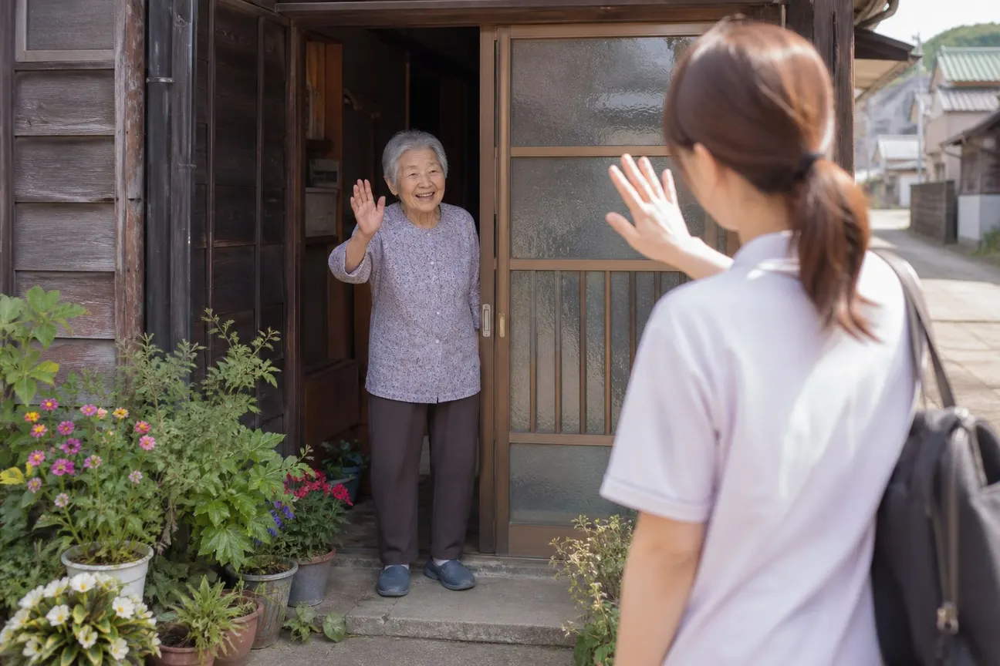
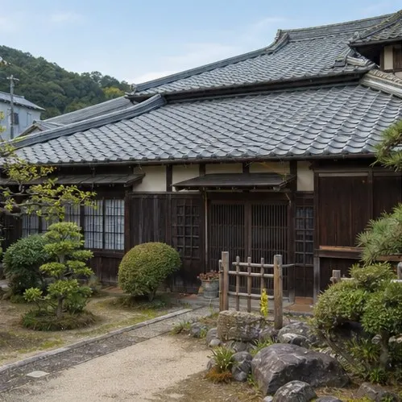

Message
「困った」と言える町に
あわいの森は1998年、結野の古い家の座敷に、近所の人が集まってお茶を飲むところから始まりました。足が弱って外に出なくなった人、子どもを連れて行く場所がない人、仕事をなくして誰にも言えずにいた人。話を聞くうちに、困りごとは「高齢」や「子育て」のように、きれいに分かれてはいないことを知りました。
それから28年、事業所は92か所に増えました。それでも大事にしていることは変わりません。制度の名前より先に、目の前の人の暮らしを見ること。ひとつの事業所で抱えきれないときは、分野をまたいで、町の人の手も借りて、一緒に考えることです。
支える人と支えられる人のあいだに、線を引かない。「あわい」という名前には、その思いを込めています。
社会福祉法人 あわいの森
理事長 真鍋 千草

What we can do
私たちの取り組み〜困りごとを、町ぐるみで〜
01
相談の入口は
ひとつでいい介護の相談に来た方が、じつは家計にも悩んでいた。そんなことはよくあります。どの事業所で受けた相談も、必要に応じて分野の違う職員が一緒に話を聞き、暮らし全体を見て次の一歩を考えます。
02
町の人と
一緒につくるこども食堂や地域の茶の間は、近所の方やボランティアの手で回っています。職員だけでは届かないところに、町の人の目と手が届く。その関係を少しずつ広げています。
03
働く人が
育つ場所に介助の技術だけでなく、話の聞き方や制度の知識も、入職後の研修で身につけられます。分野をまたいだ異動や応援もあり、ひとりの職員が多くの暮らしに触れられます。
- 92拠点富士市内
- 5分野高齢から地域づくりまで
- 1,140名職員（約）
- 1998年設立
Our history
法人のあゆみ
19984月
結野の古民家を借りて、地域の茶の間「結野の家」を開く。同じ年に社会福祉法人として認可を受ける
20016月
デイサービス かざみ坂を開所。送迎の車1台、利用者8人からのスタート
20074月
ひとつぼし工房を開所。木工と畑の仕事を始める
200910月
グループホーム ゆずり葉を開所
20125月
子育てひろば ぽけっとを開所。子ども・子育て支援の分野に加わる
20154月
暮らし相談センター ともづなを開所。お金・仕事・住まいの相談を受け始める
20167月
こども食堂 まんまるを、地域の方と一緒に始める
20189月
小規模多機能ホーム くすのき通りを開所
202111月
地域の茶の間 よりみちを開く。5つの分野がそろう
20269月
グループホーム ゆずり葉に新しい棟が完成

Outline
法人概要
| 名称 | 社会福祉法人 あわいの森 |
|---|---|
| 設立 | 1998年4月 |
| 理事長 | 真鍋 千草 |
| 所在地 | 〒417-0868 静岡県富士市結野3丁目8-21（結野の家） |
| 電話・FAX | TEL 0545-18-2614／FAX 0545-18-2615 |
| メール | info@awainomori.or.jp |
| 事業内容 | 社会福祉法に基づく社会福祉事業と公益事業 （高齢の方の支援／障がいのある方の支援／子ども・子育て支援／暮らしの立て直し支援／地域の居場所づくり） |
| 拠点数 | 92拠点（高齢34・障がい21・子ども子育て16・暮らし12・地域9） |
| 職員数 | 約1,140名（パート職員を含む） |
| 広報誌 | 『あわいだより』（年4回発行。各拠点の窓口と市内の公民館で配布） |
Disclosure
情報公開
社会福祉法人として、運営と財務の状況を公開しています。下の書類は、法人本部（結野の家）の窓口で、平日 9:00〜17:00 にどなたでもご覧いただけます。写しが必要な方は、お問い合わせフォームか本部の電話でお知らせください。
- 定款
- 役員等名簿
- 役員等の報酬に関する規程
- 事業計画書・事業報告書（2025年度）
- 計算書類（財務諸表）・財産目録（2025年度）
- 現況報告書（2025年度）
- 監事監査報告書（2025年度）
- 苦情解決の仕組みと受付状況